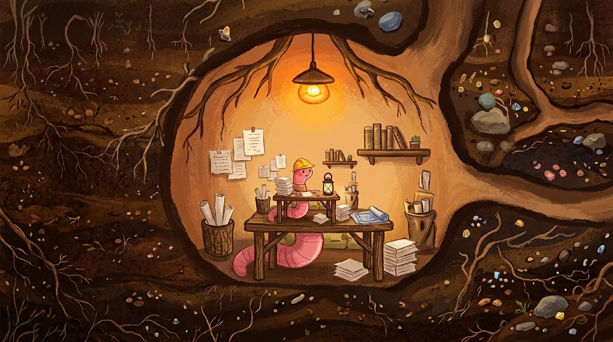

WorkWorm
Búsqueda de trabajo Disponible
Junta ofertas de los portales de empleo de Argentina, las ordena según tu perfil, adapta tu CV y sigue a los reclutadores por correo.
Ver WorkWorm en GitHubTus cuentas, chats y datos quedan en tu computadora. No hay ningún servidor de Worm Agents.
Los agentes redactan y sugieren. Lo que sale en tu nombre espera tu OK o un límite que pongas vos.
Todos los agentes están en GitHub. Leé el código, cambialo y usalo a tu manera.
Por ahora funcionan con Claude y están pensados para Argentina. Necesitás una PC con Windows y Claude Code con tu cuenta de Claude: los agentes usan tu propia suscripción, sin otra API key. LoveWorm también puede usar cualquier API compatible con OpenAI.